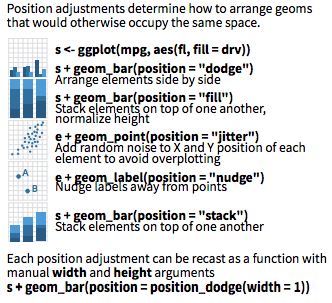
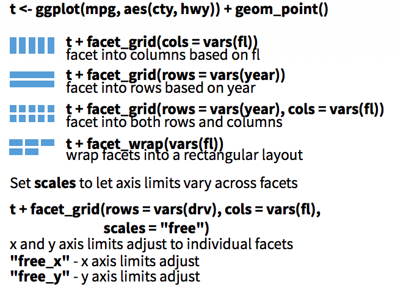
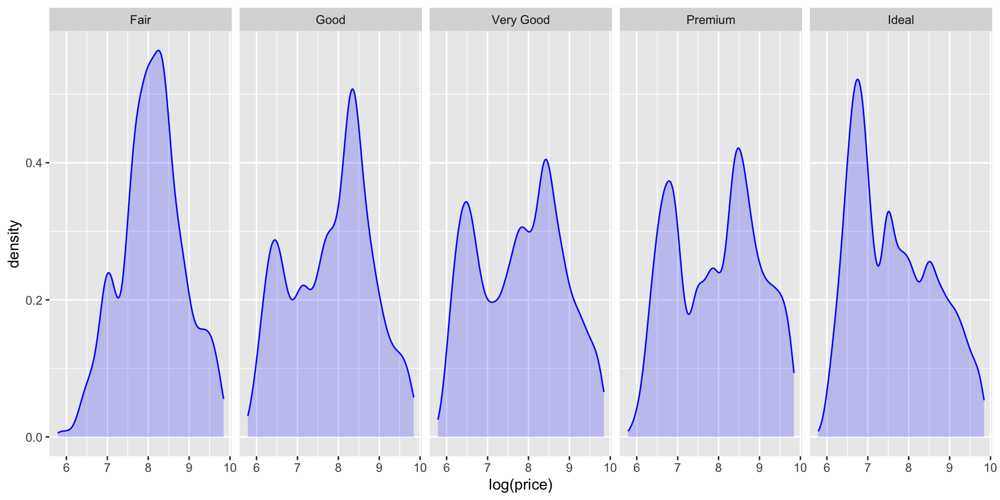
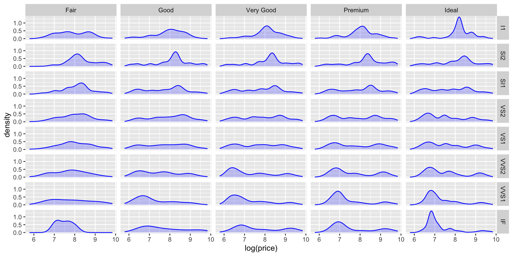
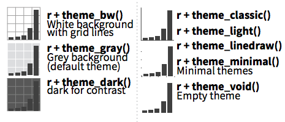
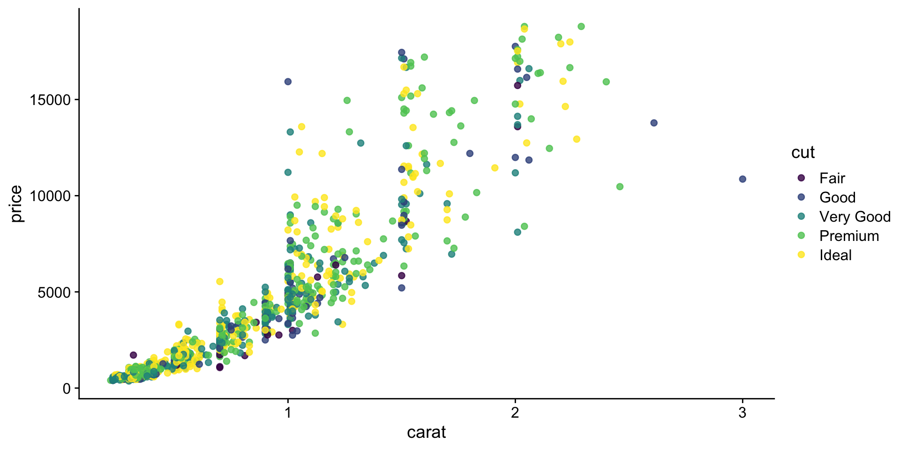
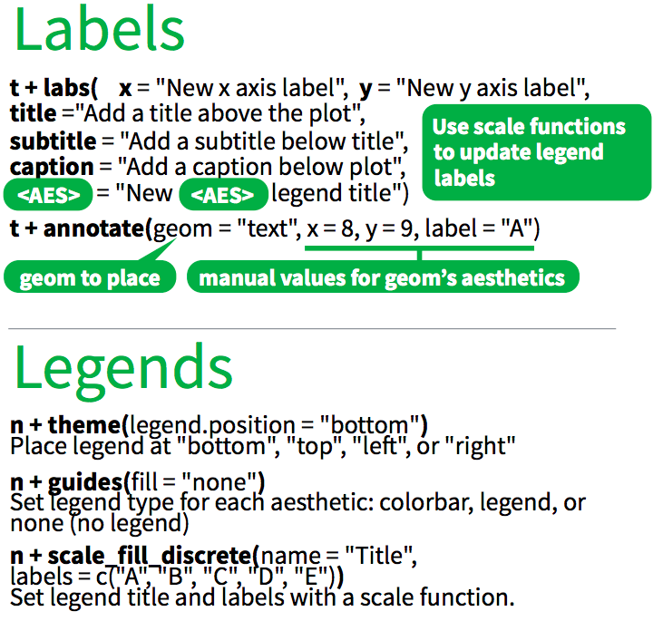
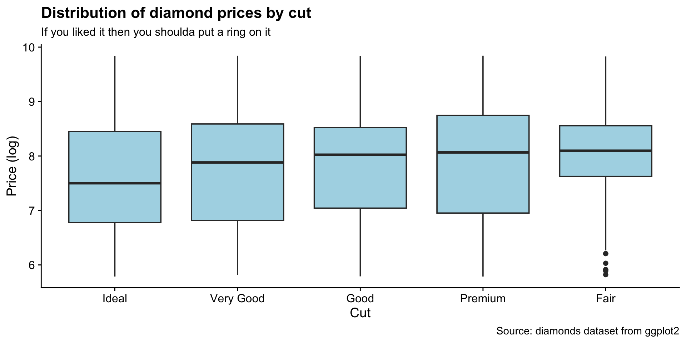
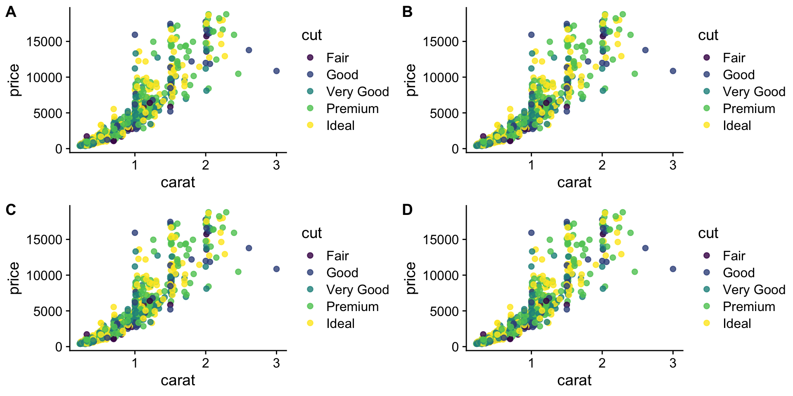
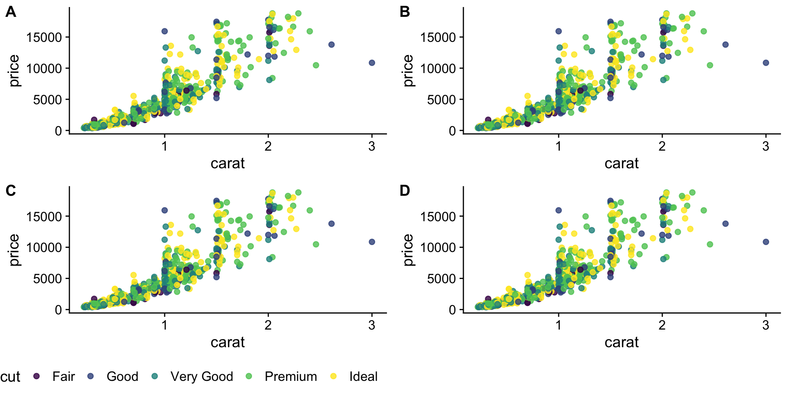

R Bootcamp - Day 5
more ggplot2
RNA Bioscience Initiative | CU Anschutz
2025-09-14
Class 4 & 5 outline
- Introduce ggplot2 & today’s data sets (Exercise 1)
- Understand the basics of ggplot2 (Exercise 2, 3)
- Geom functions (Exercise 4-8)
- Geom_point properties (Exercise 9)
- Position adjustments (Exercise 10)
- Coordinate and Scale Functions (Exercise 11)
- Zooming into a plot (Exercise 12)
- Faceting (Exercise 13)
- Themes (Exercise 14)
- Labels & Legends (Exercise 15)
- Adding lines to plots (Exercise 16)
- Making multi-panel figures (Exercise 17)
- Saving a plot (Exercise 18)
shape, size, fill, color, and transparency - Exercise 9
R has 25 built in shapes that are identified by numbers.
Some are similar: 0, 15, and 22 are all squares, but interact differently with color and fill aesthetics.
Hollow shapes have a border determined by color, solid shapes (15-18) are filled with color, an the filled shapes (21-24) have color border and fill inside.

Get a diamonds subset.
Note that aesthetics can also be defined within a geom.
This is useful if you use two different geoms that share an aesthetic.
Position adjustments - Exercise 10
Position adjustments determine how to arrange geoms that would otherwise occupy the same space.
A stacked bar chart.

Dodged bars are easier to read (proportions are clearer)
Coordinate and Scale Functions - Exercise 11
The coordinate system determines how the x and y aesthetics combine to position elements in the plot. The default coordinate system is Cartesian (
coord_cartesian()), which can be tweaked withcoord_map(),coord_fixed(),coord_flip(), andcoord_trans(), or completely replaced withcoord_polar().Scales control the details of how data values are translated to visual properties. There are 20+ scale functions. We will look at one; the ggplot2 cheatsheet is your friend for the rest.
Logarithmic axes - 1
Note the difference between axis labels in these two examples.
Logarithmic axes - 2
Flipping coordinate system (swapping x and y)

Now flip the axis.
Brief aside: ggplot can handle on-the-fly data transformations.
Here we log-transform carat and convert USD to CAD.
Zooming into a plot - Exercise 12
We might want to change the limits of x or y axes to zoom in.
Faceting to plot subsets of data into separate panels - Exercise 13
“Facets” are a powerful tool to subdivide a plot based on the values of one or more discrete variables.
A density plot we’ve seen before.
Which variables can we use to subdivide the data?
Faceted by cut

Let’s also use facet_grid() to facet by two variables.
Faceted by clarity and cut.

Scatter plot with facets.
Themes - Exercise 14
Themes can significantly affect the appearance of your plot. Thanksfully, there are a lot to choose from.
Scatter plot with default theme.
Change the theme with theme_bw().
My go-to is cowplot::theme_cowplot().
It implements much of the advice in the “Dataviz” book, i.e.. YOUR LABELS ARE TOO SMALL.

We’re not going to cover it, but you can also customize pre-existing themes.
Labels & Legends - Exercise 15
Use labs() to add / change plot labels.
ggplot(
data = diamonds,
mapping = aes(
x = fct_reorder(cut, log(price)),
y = log(price)
)
) +
geom_boxplot(fill = "lightblue") +
labs(
x = "Cut",
y = "Price (log)",
color = "Cut",
title = "Distribution of diamond prices by cut",
subtitle = "If you liked it then you shoulda put a ring on it",
caption = "Source: diamonds dataset from ggplot2"
) +
theme_cowplot()Ignoring unknown labels:
• colour : "Cut"
Additional points
How to add a line to a plot? (Exercise 16)
Also try:
How to combine multiple plots into a figure? (Exercise 17)

We have 4 legends - can they be condensed?
Yes, but it is not exactly straightforward.
need to scroll below
# fetch the legend for `p1`
legend <- get_legend(
p + theme(legend.position = "bottom")
)
p <- p + theme(legend.position = "none")
# first `plot_grid` builds the panels
panels <- plot_grid(
p,
p,
p,
p,
labels = c(
"A",
"B",
"C",
"D"
),
nrow = 2
)
# second `plot_grid` adds the legend to the panels
plot_grid(
panels,
legend,
ncol = 1,
rel_heights = c(1, .1)
)
Saving plots (Exercise 18)
Saves last plot as 5’ x 5’ file named “plot_final.png” in working directory.
Matches file type to file extension.